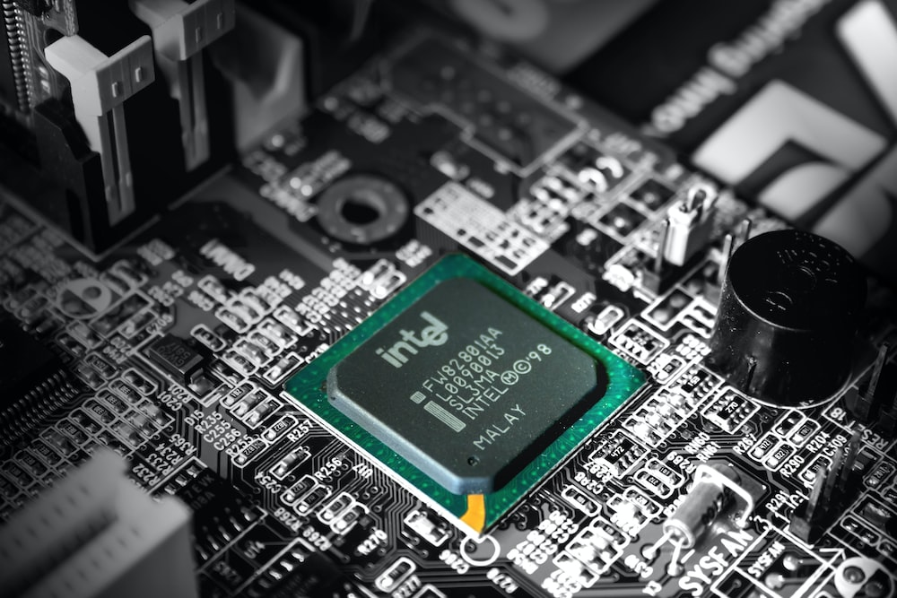
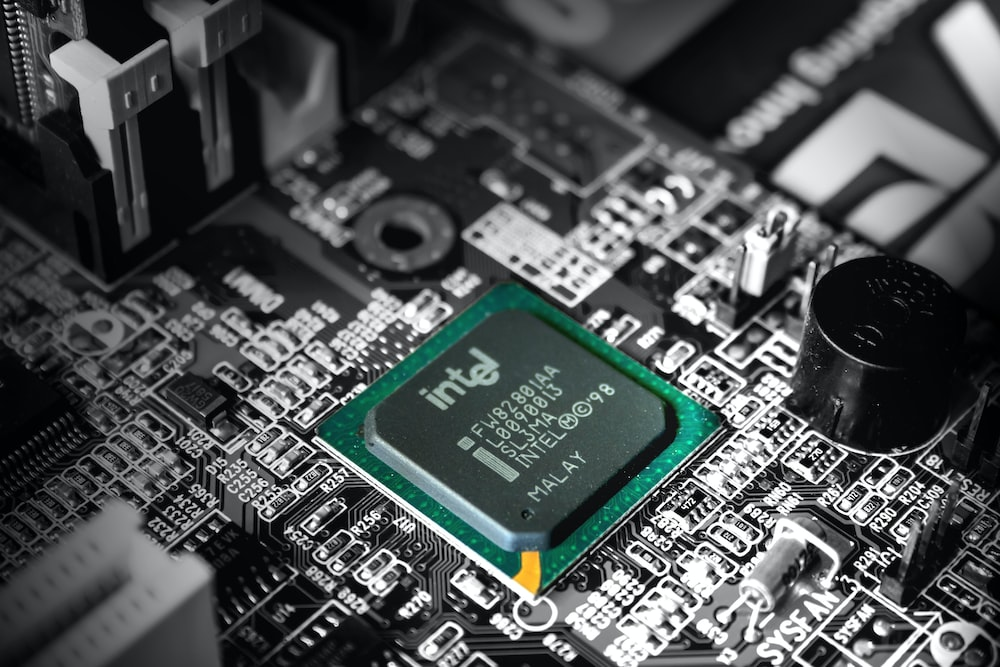

Chapter 1 Computer Programming
Dictionary.com defines a computer as “a programmable electronic device de- signed to accept data, perform prescribed mathematical and logical operations at high speed, and display the results of these operations. Mainframes, desk- top and laptop computers, tablets, and smartphones are some of the different types of computers.”
Each type of computer has its own unique design, but internally they all share the same type of hardware. The two most important hardware components are processors (or CPUs) that perform simple calculations and memory (or RAM) that temporarily stores information.
Figure 1.1 shows what these components look like.
Figure 1.1: Example processor and memory hardware.
 
Users generally see and interact with touchscreens, keyboards, and monitors,
but it’s the processors and memory that perform the actual computation.
Nowadays it’s fairly standard, even for a smartphone, to have at least eight
processors and four gigabytes (four billion cells) of memory.
1.2 What Is Programming?

Users generally see and interact with touchscreens, keyboards, and monitors,
but it’s the processors and memory that perform the actual computation.
Nowadays it’s fairly standard, even for a smartphone, to have at least eight
processors and four gigabytes (four billion cells) of memory.
1.2 What Is Programming?A program is a sequence of instructions that specifies how to perform a computation on computer hardware. The computation might be something mathematical, like solving a system of equations or finding the roots of a poly- nomial. It could also be a symbolic computation, like searching and replacing text in a document or (strangely enough) compiling a program. The details look different in different languages, but a few basic instructions appear in just about every language:
1.3 The Hello World Program 3 input: Get data from the keyboard, a file, a sensor, or some other device. output: Display data on the screen, or send data to a file or other device. math: Perform basic mathematical operations like addition and division. decision: Check for certain conditions and execute the appropriate code. repetition: Perform an action repeatedly, usually with some variation. Believe it or not, that’s pretty much all there is to it. Every program you’ve ever used, no matter how complicated, is made up of small instructions that look much like these. So you can think of programming as the process of breaking down a large, complex task into smaller and smaller subtasks. The process continues until the subtasks are simple enough to be performed with the electronic circuits provided by the hardware.
1.3 The Hello World Program Traditionally, the first program you write when learning a new programming language is called the “Hello World” program. All it does is output the words Hello, World! to the screen. In Java, it looks like this: public class Hello { public static void main(String[] args) { // generate some simple output System.out.println("Hello, World!"); } } When this program runs, it displays the following: Hello, World! Notice that the output does not include the quotation marks. Java programs are made up of class and method definitions, and methods are made up of statements. A statement is a line of code that performs a basic 4 Chapter 1 Computer Programming action. In the Hello World program, this line is a print statement that displays a message to the user: System.out.println("Hello, World!"); System.out.println displays results on the screen; the name println stands for “print line”. Confusingly, print can mean both “display on the screen” and “send to the printer”. In this book, we’ll try to say “display” when we mean output to the screen. Like most statements, the print statement ends with a semicolon (;).
Java is “case-sensitive”, which means that uppercase and lowercase are not the same. In the Hello World program, System has to begin with an uppercase letter; system and SYSTEM won’t work. A method is a named sequence of statements. This program defines one method named main: public static void main(String[] args) The name and format of main is special: when the program runs, it starts at the first statement in main and ends when it finishes the last statement. Later, you will see programs that define more than one method. This program defines a class named Hello. For now, a class is a collection of methods; we’ll have more to say about this later. You can give a class any name you like, but it is conventional to start with a capital letter. The name of the class has to match the name of the file it is in, so this class has to be in a file named Hello.java. Java uses curly braces ({ and }) to group things together. In Hello.java, the outermost braces contain the class definition, and the inner braces contain the method definition. The line that begins with two slashes (//) is a comment, which is a bit of English text that explains the code. When Java sees //, it ignores everything from there until the end of the line. Comments have no effect on the execution of the program, but they make it easier for other programmers (and your future self) to understand what you meant to do. 1.4 Compiling Java Programs 5 1.4 Compiling Java Programs
The programming language you will learn in this book is Java, which is a high- level language. Other high-level languages you may have heard of include Python, C and C++, PHP, Ruby, and JavaScript. Before they can run, programs in high-level languages have to be translated into a low-level language, also called “machine language”. This translation takes some time, which is a small disadvantage of high-level languages. But high-level languages have two major advantages: It is much easier to program in a high-level language. Programs take less time to write, they are shorter and easier to read, and they are more likely to be correct. High-level languages are portable, meaning they can run on different kinds of computers with few or no modifications. Low-level programs can run on only one kind of computer. Two kinds of programs translate high-level languages into low-level languages: interpreters and compilers. An interpreter reads a high-level program and executes it, meaning that it does what the program says. It processes the pro- gram a little at a time, alternately reading lines and performing computations. Figure 1.2 shows the structure of an interpreter. Figure 1.2: How interpreted languages are executed. In contrast, a compiler reads the entire program and translates it completely before the program starts running. The high-level program is called the source code. The translated program is called the object code, or the executable. Once a program is compiled, you can execute it repeatedly without further translation of the source code. As a result, compiled programs often run faster than interpreted programs.